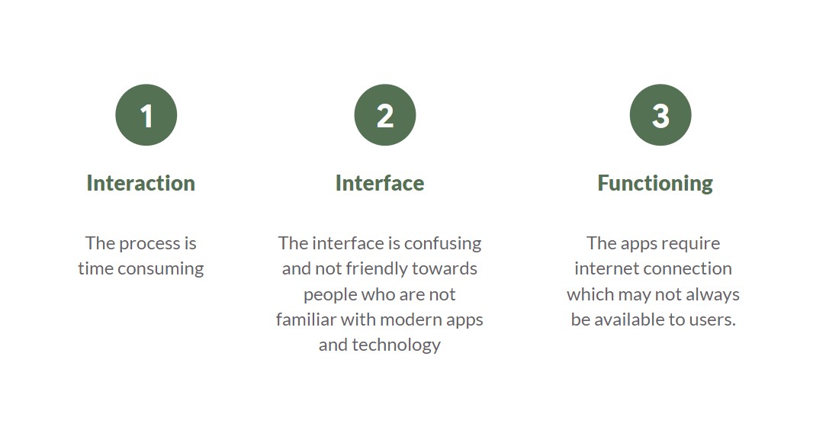
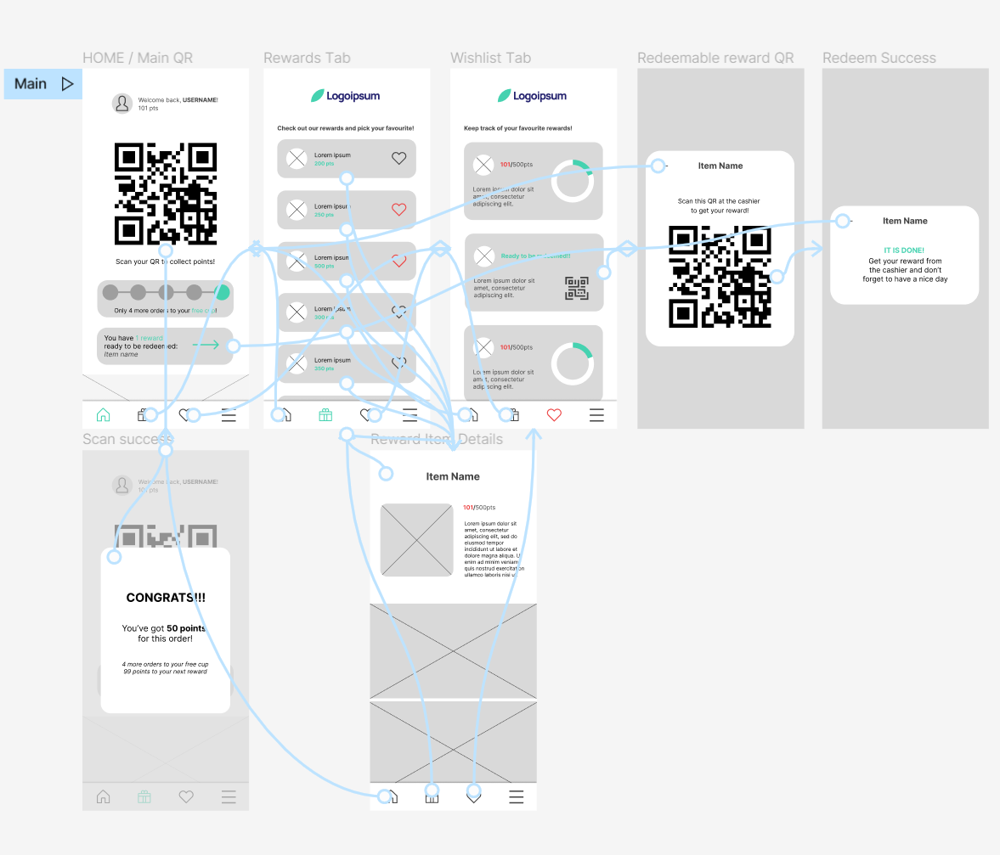

CASE STUDY: Cafe-panion
A customer-loyalty app for a cafe chain
ROLE: UX Designer
DURATION: Oct - Dec 2022
PROJECT GOAL: Design a customer-loyalty app that actually helps keep regular customers engaged.
TARGET AUDIENCE: Regular customers of our theoretical cafe chain.
CHALLENGE: 70% of screening survey participants reportedly claimed they have no interest in the customer-loyalty apps offered by their favorite vendors due to their past experiences with them.
1. Research and Empathize
For the initial research of the project, I took it to the field to conduct screening survey targeting regular cafe shop goers, hoping to gain some insights into their general thoughts on customer-loyalty apps and getting volunteers for further users interview to identify what they like and don't about the apps they've tried.

As previously stated, survey data showed that almost all customers and regulars have tried out customer-loyalty apps offered from their favorite vendors/brands before but very quickly grew out of it with an alarming drop-off rates of over 70%.
Fortunately, I was able to get to sit down with 5 participants who volunteered for an interview, the results of which are the findings of these following pain points that the users had with the customer-loyalty apps they've tried before.
Pain Points
Meet the Users
Working with the datas gathered from the user interviews, I was able to narrow down to two fictional personas, of which "Adam Monet" was the primary one representing all the problems our users had.
Problem Statement
Adam is a regular customer who needs a simplified interface and experience because he is not familiar with modern technologies.
2. Initial Ideas and Designs
Information Architecture
Planning out the information architecture of the app helped a lot in getting an overall image of the product and the main user flow, where to start and where to focus.
Sketching Concepts
I started out by sketching wireframes on paper as it is the cheap and fastest way to visualize different ideas, trying different layouts, different possible versions of the same screen, connecting the screens together to get a rough visual of the main user-flow.

Mid-fi Wireframes and Prototype
With all the basic layouts sketched out on paper, I moved on to Figma to create digital wireframes and medium-fidelity prototype to prepare for the first round of user testing by usability study.
Try it out here: Mid-fi Prototype
User Testing
With the first prototype ready to be tested, I planned and
conducted a moderated usability study session with the 5
volunteered participants from the previous interviews.
The main goal of the study is to see first hand how well our
users interact with the prototype and figure out what could be
improved before moving on to the final design state.
As expected, the first round of user testing provided tons of
interesting feedbacks, most of which were positive, along with
some room for improvement pointed out by the participants. So I
took some time to organize user feedbacks into clear datas,
reassess and finalize them into actionable insights.
Here are our shortlisted findings:
- Users need the
redeemable items to visually stand out more.
- Having titles alongside the icons can help
users navigate more easily.
- Pushing the redeemable items upperward can
save users a lot of time.
- Users want to be able to
see how much points they are having
while browsing rewards.
3. Final Design
Try it out here: Final Prototype
TAKEAWAYS
IMPACT: With the new and simplified design, the app positively sparked interests in our users. One of the quotes I’ve taken from the usability study participant: “This is so quick and easy yet feels so fantastic! I am really looking forward to when the app actually launches.”
WHAT I LEARNED: While designing the Cafe-panion app, I learned how simplifications can make such a huge difference in resolving navigation and interaction issues. And for that I owe my gratitude towards the users and all the time I spend interviewing them.
Next steps
- Conduct another usability studies after the product is
finished with development for further iterations.
- Research for potential smartwatch features.